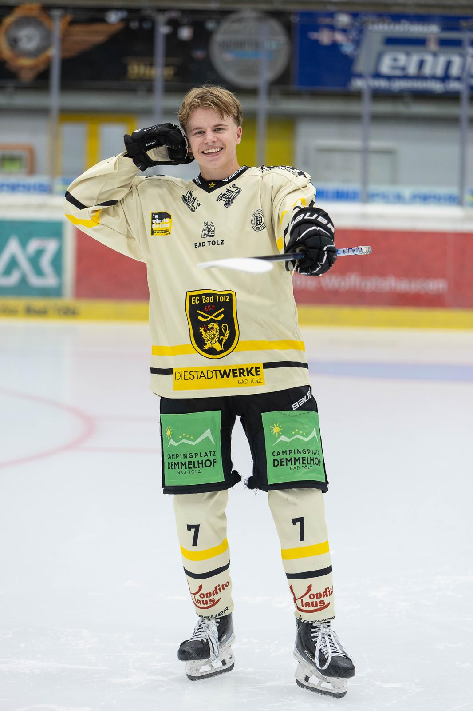
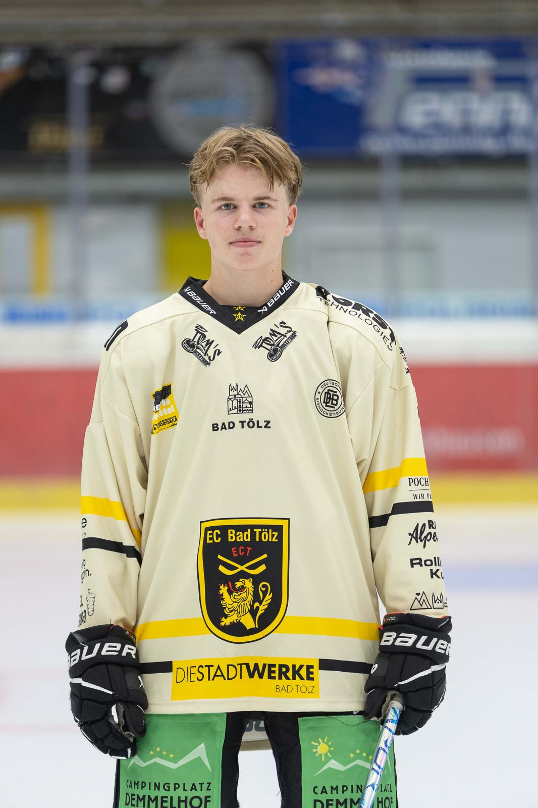

Die Menschen hinter Erlebnis Egerland
Michael
März
Meine Aufgaben
- Sponsoring
- Filmteam
- Tonteam
Meine Motivation
Warum ich dabei bin
Ich war bei diesem Seminar dabei, weil ich große Freude an solchen Projekten habe und schon im Vorfeld von ehemaligen Teilnehmenden viel Positives darüber gehört hatte. Umso schöner war es, schließlich selbst Teil davon zu sein.
Besonders viel Spaß hat mir das gemeinsame Produzieren unseres Dokumentarfilms gemacht. Wir waren eine richtig tolle Truppe, hatten eine schöne gemeinsame Zeit und konnten zusammen das Egerland erkunden. Dabei sind viele besondere Erinnerungen entstanden.
Was mir besonders am Herzen liegt, ist, die Geschichte der Vertriebenen lebendig zu halten und sie auch an die nächsten Generationen weiterzugeben. Es war eine tolle Erfahrung, an die ich mich immer wieder gerne zurückerinnere!
